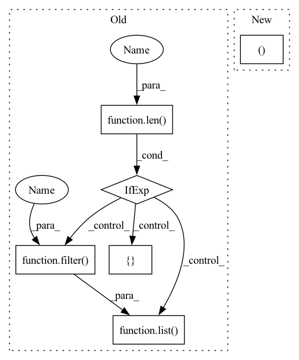

Pattern ID :39204
Before Change
self.feature_index = feature_index
self.device = device
self.sparse_feature_columns = list(filter(lambda x: isinstance(x, SparseFeat), feature_columns)) if len(feature_columns) else []
self.dense_feature_columns = list( filter( lambda x: isinstance(x, DenseFeat), feature_columns )) if len(feature_columns ) else []
self.varlen_sparse_feature_columns = list(filter(lambda x: isinstance(x, VarLenSparseFeat), feature_columns)) if len(feature_columns) else []
// 特征embdding字典，{feat_name: nn.Embedding()}
self.embedding_dict = create_embedding_matrix(feature_columns, init_std, linear=True, sparse=False)After Change
super(Linear, self).__init__()
self.feature_index = feature_index
self.device = device
self.sparse_feature_columns, self.dense_feature_columns, self.varlen_sparse_feature_columns = split_columns(feature_columns)
// 特征embdding字典，{feat_name: nn.Embedding()}
self.embedding_dict = create_embedding_matrix(feature_columns, init_std, linear=True, sparse=False)In pattern: SUPERPATTERN
Frequency: 3
Non-data size: 6
Instances Fragment ID: 111376358
Project Name: tongjilibo/rec4torch
Commit Name: d2de30e40cd3ade6d92c74af0c910bca2749bbca
Time: 2022-10-06
Author: tongjilibo@163.com
File Name: rec4torch/models.py
M Class Name: Linear
N Class Name: Linear
M Method Name: __init__(5)
N Method Name: __init__(5)
M Parent Class: nn.Module
N Parent Class: nn.Module
M File Name: rec4torch/models.py
N File Name: rec4torch/models.py
M Start Line: 290
M End Line: 292
N Start Line: 291
N End Line: 291
Before Change
self.device = device
self.sparse_feature_columns = list(filter(lambda x: isinstance(x, SparseFeat), feature_columns)) if len(feature_columns) else []
self.dense_feature_columns = list(filter(lambda x: isinstance(x, DenseFeat), feature_columns)) if len(feature_columns) else []
self.varlen_sparse_feature_columns = list( filter( lambda x: isinstance(x, VarLenSparseFeat), feature_columns)) if len( feature_columns) else []
// 特征embdding字典，{feat_name: nn.Embedding()}
self.embedding_dict = create_embedding_matrix(feature_columns, init_std, linear=True, sparse=False)
After Change
super(Linear, self).__init__()
self.feature_index = feature_index
self.device = device
self.sparse_feature_columns, self.dense_feature_columns, self.varlen_sparse_feature_columns = split_columns(feature_columns)
// 特征embdding字典，{feat_name: nn.Embedding()}
self.embedding_dict = create_embedding_matrix(feature_columns, init_std, linear=True, sparse=False) Fragment ID: 111376363
Project Name: tongjilibo/rec4torch
Commit Name: d2de30e40cd3ade6d92c74af0c910bca2749bbca
Time: 2022-10-06
Author: tongjilibo@163.com
File Name: rec4torch/models.py
M Class Name: Linear
N Class Name: Linear
M Method Name: __init__(5)
N Method Name: __init__(5)
M Parent Class: nn.Module
N Parent Class: nn.Module
M File Name: rec4torch/models.py
N File Name: rec4torch/models.py
M Start Line: 290
M End Line: 292
N Start Line: 291
N End Line: 291
Before Change
dnn_dropout=0, dnn_activation="relu", dnn_use_bn=False, task="binary"):
super(DIN, self).__init__([], dnn_feature_columns, l2_reg_linear=l2_reg_linear,
l2_reg_embedding=l2_reg_embedding, init_std=init_std, task=task)
self.sparse_feature_columns = list( filter( lambda x: isinstance(x, SparseFeat), dnn_feature_columns)) if len( dnn_feature_columns) else []
self.varlen_sparse_feature_columns = list(filter(lambda x: isinstance(x, VarLenSparseFeat), dnn_feature_columns)) if dnn_feature_columns else []
self.candicate_history_list = candicate_history_list
// 把varlen_sparse_feature_columns分解成hist和varlen特征After Change
super(DIN, self).__init__([], dnn_feature_columns, l2_reg_embedding=l2_reg_embedding, init_std=init_std, task=task)
del self.linear_model // 删除不必要的网络结构
self.sparse_feature_columns, self.dense_feature_columns, self.varlen_sparse_feature_columns = split_columns(dnn_feature_columns)
self.item_history_list = item_history_list
// 把varlen_sparse_feature_columns分解成hist、neg_hist和varlen特征 Fragment ID: 111376362
Project Name: tongjilibo/rec4torch
Commit Name: d2de30e40cd3ade6d92c74af0c910bca2749bbca
Time: 2022-10-06
Author: tongjilibo@163.com
File Name: rec4torch/models.py
M Class Name: DIN
N Class Name: DIN
M Method Name: __init__(14)
N Method Name: __init__(15)
M Parent Class: RecBase
N Parent Class: RecBase
M File Name: rec4torch/models.py
N File Name: rec4torch/models.py
M Start Line: 515
M End Line: 532
N Start Line: 519
N End Line: 538
Before Change
SparseFeat和VarLenSparseFeat生成Embedding，VarLenSparseFeat要过Pooling
sparse_feature_columns = list(filter(lambda x: isinstance(x, SparseFeat), feature_columns)) if len(feature_columns) else []
dense_feature_columns = list( filter( lambda x: isinstance(x, DenseFeat), feature_columns)) if len( feature_columns) else []
varlen_sparse_feature_columns = list(filter(lambda x: isinstance(x, VarLenSparseFeat), feature_columns)) if feature_columns else []
if not support_dense and len(dense_feature_columns) > 0:
raise ValueError("DenseFeat is not supported in dnn_feature_columns")After Change
def input_from_feature_columns(self, X, feature_columns, embedding_dict, support_dense=True):
SparseFeat和VarLenSparseFeat生成Embedding，VarLenSparseFeat要过Pooling
sparse_feature_columns, dense_feature_columns, varlen_sparse_feature_columns = split_columns(feature_columns)
if not support_dense and len(dense_feature_columns) > 0:
raise ValueError("DenseFeat is not supported in dnn_feature_columns") Fragment ID: 111376365
Project Name: tongjilibo/rec4torch
Commit Name: d2de30e40cd3ade6d92c74af0c910bca2749bbca
Time: 2022-10-06
Author: tongjilibo@163.com
File Name: rec4torch/models.py
M Class Name: RecBase
N Class Name: RecBase
M Method Name: input_from_feature_columns(5)
N Method Name: input_from_feature_columns(5)
M Parent Class: BaseModel
N Parent Class: BaseModel
M File Name: rec4torch/models.py
N File Name: rec4torch/models.py
M Start Line: 353
M End Line: 355
N Start Line: 352
N End Line: 352